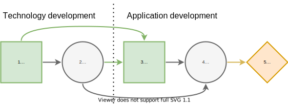

Contingent Portfolio Programming
Description
[1], section 4.2
For instance, assume that the first-stage decisions specify which technology development projects will be started to generate patent-based intellectual property ( P ) for a platform. This intellectual property contributes subject to some uncertainties to the technical competitiveness ( T ) of the platform. In the second stage, it is possible to carry out application ( A ) development projects which, when completed, yield cash flows that depend on the market share of the platform. This market share ( M ) depends on the competitiveness of the platform and the number of developed applications. The aim is to maximize the cash flows from application projects less the cost of technology and application development projects.
Influence Diagram: Projects

The influence diagram of the contingent portfolio programming (CPP) problem.
There are $n_T$ technology development projects and $n_A$ application development projects.
Decision states to develop patents
Chance states of technical competitiveness $c_j^T∈C_j^T$
Decision states to develop applications
Chance states of market size $c_l^M∈C_l^M$
using Logging, Random
using JuMP, Gurobi
using DecisionProgramming
Random.seed!(42)
const dᴾ = 1 # Decision node: range for number of patents
const cᵀ = 2 # Chance node: technical competitiveness
const dᴬ = 3 # Decision node: range for number of applications
const cᴹ = 4 # Chance node: market share
const DP_states = ["0-3 patents", "3-6 patents", "6-9 patents"]
const CT_states = ["low", "medium", "high"]
const DA_states = ["0-5 applications", "5-10 applications", "10-15 applications"]
const CM_states = ["low", "medium", "high"]
S = States([
(length(DP_states), [dᴾ]),
(length(CT_states), [cᵀ]),
(length(DA_states), [dᴬ]),
(length(CM_states), [cᴹ]),
])
C = Vector{ChanceNode}()
D = Vector{DecisionNode}()
V = Vector{ValueNode}()
X = Vector{Probabilities}()
Y = Vector{Consequences}()Decision on range of number of patents
I_DP = Vector{Node}()
push!(D, DecisionNode(dᴾ, I_DP))Technical competitiveness probability
Probability of technical competitiveness $c_j^T$ given the range $d_i^P$: $ℙ(c_j^T∣d_i^P)∈[0,1]$. A high number of patents increases probability of high competitiveness and a low number correspondingly increases the probability of low competitiveness.
I_CT = [dᴾ]
X_CT = zeros(S[dᴾ], S[cᵀ])
X_CT[1, :] = [1/2, 1/3, 1/6]
X_CT[2, :] = [1/3, 1/3, 1/3]
X_CT[3, :] = [1/6, 1/3, 1/2]
push!(C, ChanceNode(cᵀ, I_CT))
push!(X, Probabilities(cᵀ, X_CT))Decision on range of number of applications
I_DA = [dᴾ, cᵀ]
push!(D, DecisionNode(dᴬ, I_DA))Market share probability
Probability of market share $c_l^M$ given the technical competitiveness $c_j^T$ and range $d_k^A$: $ℙ(c_l^M∣c_j^T,d_k^A)∈[0,1]$. Higher competitiveness and number of application projects both increase the probability of high market share.
I_CM = [cᵀ, dᴬ]
X_CM = zeros(S[cᵀ], S[dᴬ], S[cᴹ])
X_CM[1, 1, :] = [2/3, 1/4, 1/12]
X_CM[1, 2, :] = [1/2, 1/3, 1/6]
X_CM[1, 3, :] = [1/3, 1/3, 1/3]
X_CM[2, 1, :] = [1/2, 1/3, 1/6]
X_CM[2, 2, :] = [1/3, 1/3, 1/3]
X_CM[2, 3, :] = [1/6, 1/3, 1/2]
X_CM[3, 1, :] = [1/3, 1/3, 1/3]
X_CM[3, 2, :] = [1/6, 1/3, 1/2]
X_CM[3, 3, :] = [1/12, 1/4, 2/3]
push!(C, ChanceNode(cᴹ, I_CM))
push!(X, Probabilities(cᴹ, X_CM))We add a dummy value node to avoid problems with the influence diagram validation. Without this, the final chance node would be seen as redundant.
push!(V, ValueNode(5, [cᴹ]))
push!(Y,Consequences(5, zeros(S[cᴹ])))Validating the Influence Diagram
validate_influence_diagram(S, C, D, V)
sort!.((C, D, V, X, Y), by = x -> x.j)P = DefaultPathProbability(C, X)Decision Model: Portfolio Selection
model = Model()
z = DecisionVariables(model, S, D)
π_s = PathProbabilityVariables(model, z, S, P)Creating problem specific variables
We recommend reading Section 4.2. in [1] for motivation and details of the formulation.
Technology project $t$ costs $I_t∈ℝ^+$ and generates $O_t∈ℕ$ patents.
Application project $a$ costs $I_a∈ℝ^+$ and generates $O_a∈ℕ$ applications. If completed, provides cash flow $V(a|c_l^M)∈ℝ^+.$
n_T = 5 # number of technology projects
n_A = 5 # number of application projects
I_t = rand(n_T)*0.1 # costs of technology projects
O_t = rand(1:3,n_T) # number of patents for each tech project
I_a = rand(n_T)*2 # costs of application projects
O_a = rand(2:4,n_T) # number of applications for each appl. project
V_A = rand(S[cᴹ], n_A).+0.5 # Value of an application
V_A[1, :] .+= -0.5 # Low market share: less value
V_A[3, :] .+= 0.5 # High market share: more valueDecision variables $x^T(t)∈\{0, 1\}$ indicate which technologies are selected.
Decision variables $x^A(a∣d_i^P,c_j^T)∈\{0, 1\}$ indicate which applications are selected.
x_T = variables(model, [S[dᴾ]...,n_T]; binary=true)
x_A = variables(model, [S[dᴾ]...,S[cᵀ]...,S[dᴬ]..., n_A]; binary=true)Number of patents $x^T(t) = ∑_i x_i^T(t) z(d_i^P)$
Number of applications $x^A(a∣d_i^P,c_j^T) = ∑_k x_k^A(a∣d_i^P,c_j^T) z(d_k^A|d_i^P,c_j^T)$
Helpful variables:
Large constant $M$ (e.g. $\frac{3}{2}\text{max}\{\sum_t O_t,\sum_a O_a\}$)
Small constant $\varepsilon$ = $\frac{1}{2}\text{min}\{O_t, O_a\}$
M = 20 # a large constant
ε = 0.5*minimum([O_t O_a]) # a helper variable, allows using ≤ instead of < in constraints (28b) and (29b)Limits $q_i^P$ and $q_k^A$ of the intervals
q_P = [0, 3, 6, 9] # limits of the technology intervals
q_A = [0, 5, 10, 15] # limits of the application intervalsShorthand for the decision variables $z$
z_dP = z[1]
z_dA = z[2]Creating problem specific constraints
@constraint(model, [i=1:3],
sum(x_T[i,t] for t in 1:n_T) <= z_dP[i]*n_T)@constraint(model, [i=1:3, j=1:3, k=1:3],
sum(x_A[i,j,k,a] for a in 1:n_A) <= z_dP[i]*n_A)@constraint(model, [i=1:3, j=1:3, k=1:3],
sum(x_A[i,j,k,a] for a in 1:n_A) <= z_dA[i,j,k]*n_A)@constraint(model, [i=1:3],
q_P[i] - (1 - z_dP[i])*M <= sum(x_T[i,t]*O_t[t] for t in 1:n_T))
@constraint(model, [i=1:3],
sum(x_T[i,t]*O_t[t] for t in 1:n_T) <= q_P[i+1] + (1 - z_dP[i])*M - ε)
@constraint(model, [i=1:3, j=1:3, k=1:3],
q_A[k] - (1 - z_dA[i,j,k])*M <= sum(x_A[i,j,k,a]*O_a[a] for a in 1:n_A))
@constraint(model, [i=1:3, j=1:3, k=1:3],
sum(x_A[i,j,k,a]*O_a[a] for a in 1:n_A) <= q_A[k+1] + (1 - z_dA[i,j,k])*M - ε)We can also model dependencies between the technology and application projects, e.g. application project $a$ can be completed only if technology project $t$ has been completed. This is done by adding constraints
As an example, we state that application projects 1 and 2 require technology project 1, and application project 2 also requires technology project 2.
@constraint(model, [i=1:3, j=1:3, k=1:3], x_A[i,j,k,1] <= x_T[i,1])
@constraint(model, [i=1:3, j=1:3, k=1:3], x_A[i,j,k,2] <= x_T[i,1])
@constraint(model, [i=1:3, j=1:3, k=1:3], x_A[i,j,k,2] <= x_T[i,2])Path Utility
struct PathUtility <: AbstractPathUtility
expr
end
(U::PathUtility)(s::Path) = value.(U.expr[s])
U = PathUtility(@expression(model, [s = paths(S)],
sum(x_A[s[1:3]..., a]*(V_A[s[4],a] - I_a[a]) for a in 1:n_A) -
sum(x_T[s[1],t]*I_t[t] for t in 1:n_T)))
EV = @expression(model, sum(π_s[s...] * U.expr[s] for s in paths(S)))
@objective(model, Max, EV)Solving the Model
optimizer = optimizer_with_attributes(
() -> Gurobi.Optimizer(Gurobi.Env()),
"IntFeasTol" => 1e-9,
"LazyConstraints" => 1,
)
set_optimizer(model, optimizer)
optimize!(model)Analyzing results
The optimal decision strategy and the utility distribution are printed. The strategy is to make 6-9 patents (state 3 in node 1) and 5-10 applications if the competitiveness is low, 10-15 otherwise. The expected utility for this strategy is 0.41.
Z = DecisionStrategy(z)julia> print_decision_strategy(S, Z)
┌────────┬────┬───┐
│ Nodes │ () │ 1 │
├────────┼────┼───┤
│ States │ () │ 3 │
└────────┴────┴───┘
┌────────┬────────┬───┐
│ Nodes │ (1, 2) │ 3 │
├────────┼────────┼───┤
│ States │ (1, 1) │ 1 │
│ States │ (2, 1) │ 1 │
│ States │ (3, 1) │ 2 │
│ States │ (1, 2) │ 1 │
│ States │ (2, 2) │ 1 │
│ States │ (3, 2) │ 3 │
│ States │ (1, 3) │ 1 │
│ States │ (2, 3) │ 1 │
│ States │ (3, 3) │ 3 │
│ ⋮ │ ⋮ │ ⋮ │
└────────┴────────┴───┘udist = UtilityDistribution(S, P, U, Z)julia> print_utility_distribution(udist)
┌───────────┬─────────────┐
│ Utility │ Probability │
│ Float64 │ Float64 │
├───────────┼─────────────┤
│ -2.164246 │ 0.097222 │
│ -0.759404 │ 0.083333 │
│ -0.077398 │ 0.236111 │
│ 0.258058 │ 0.055556 │
│ 0.505004 │ 0.027778 │
│ 1.342020 │ 0.500000 │
└───────────┴─────────────┘julia> print_statistics(udist)
┌──────────┬────────────┐
│ Name │ Statistics │
│ String │ Float64 │
├──────────┼────────────┤
│ Mean │ 0.407403 │
│ Std │ 1.118111 │
│ Skewness │ -1.004935 │
│ Kurtosis │ 0.071940 │
└──────────┴────────────┘References
- 1Salo, A., Andelmin, J., & Oliveira, F. (2019). Decision Programming for Multi-Stage Optimization under Uncertainty, 1–35. Retrieved from http://arxiv.org/abs/1910.09196